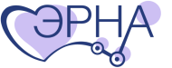
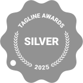
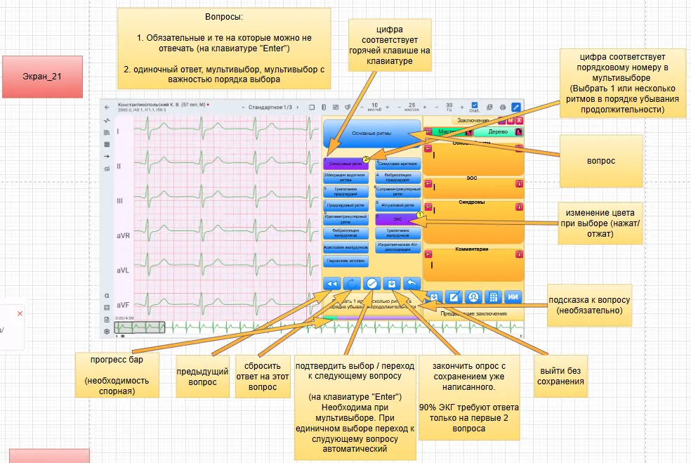
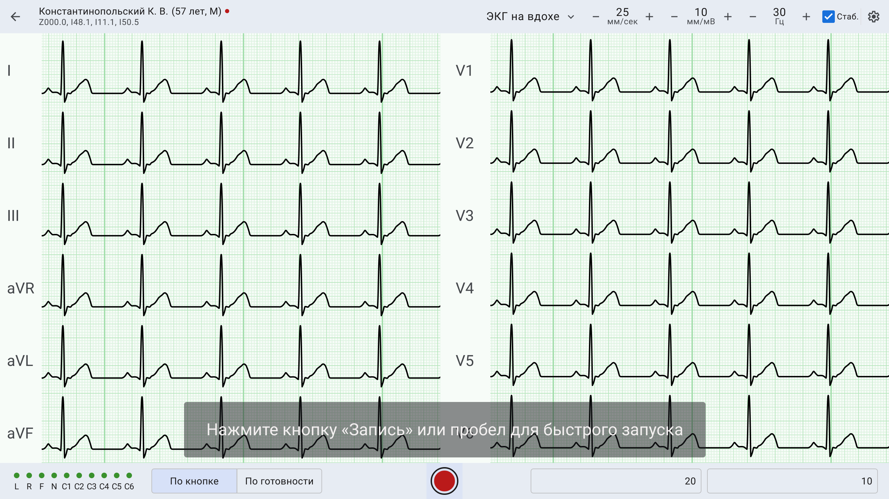
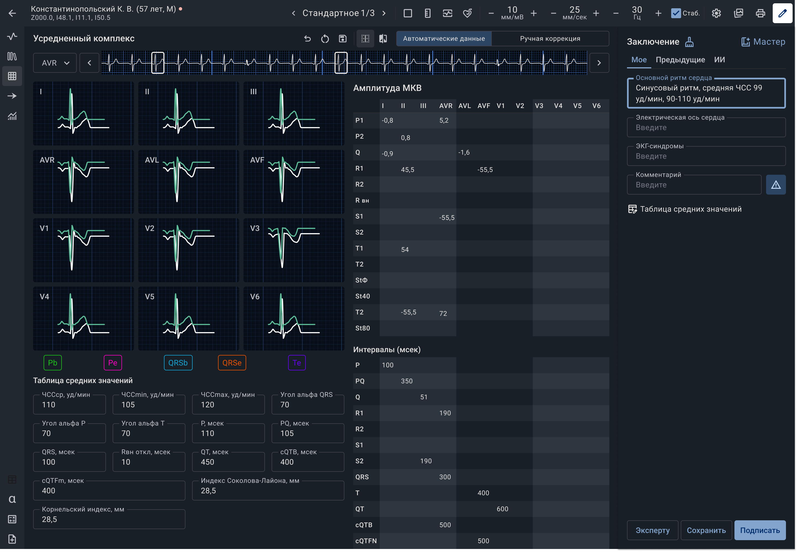
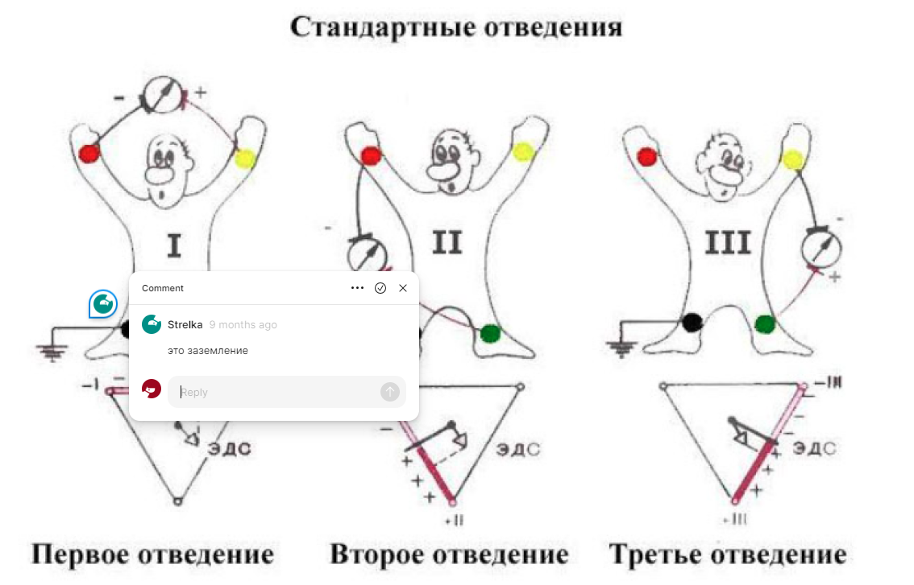
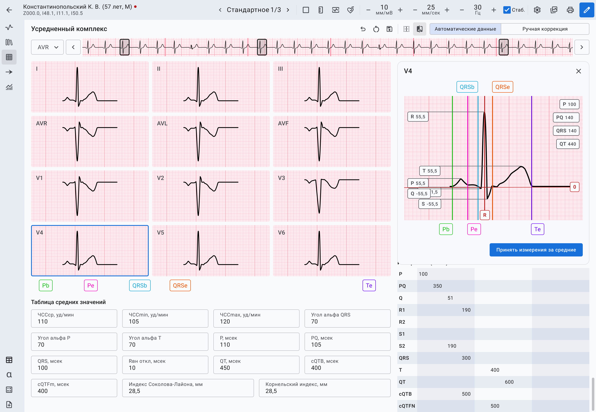

Кардиум · ERNAКардиум: клиническая диагностическая платформа
Контекст
«Кардиум» — медицинская диагностическая платформа, в которой врачи и медицинский административный персонал решают задачи, связанные с кардиологией: от ведения пациентов и документооборота до снятия ЭКГ, расшифровки и подготовки заключения.
В мою зону работы входили сценарии, связанные с ЭКГ: как медицинскому персоналу быстро и корректно снять кардиограмму, а врачу — удобно работать с плёнкой, измерениями и инструментами анализа.
Это был не проект “нарисовать красивый медицинский интерфейс”. Чтобы интерфейс получился рабочим, нужно было разобраться в том, как устроен сам процесс: где появляется сигнал, как проверяется качество записи, что видит врач, какие инструменты ему нужны и какие настройки помогают читать ЭКГ без лишнего напряжения.
Признание проекта
Tagline Awards — призёр в категории медицинских цифровых продуктов.
Ruward Award — призёр отраслевой премии цифровых проектов.
Проект получил профессиональное признание отрасли и вошёл в число отмеченных медицинских цифровых решений.

Задача
Заказчик пришёл с существующей системой: скриншотами старого интерфейса, подробными расшифровками логики и готовой аналитической базой.
Нужно было переработать интерфейс так, чтобы он стал понятнее для пользователей и лучше поддерживал реальные сценарии работы с ЭКГ.
Важная особенность проекта: интерфейс был не только частью будущего продукта, но и частью коммерческих презентаций. Пока система проходила испытания, макеты уже помогали показывать, как продукт будет работать.
Исходные данные
Я не проводила исследования с нуля. В проекте уже была подготовлена аналитика: интервью с медицинскими экспертами, сценарии пользователей, конкурентный анализ, схемы процессов и флоу работы с ЭКГ.
Моя задача заключалась в том, чтобы использовать эту аналитику как основу для проектирования интерфейса.
Отдельные решения мы уточняли на воркшопах и созвонах с командой заказчика. Для сложных сценариев собирали кликабельные прототипы, чтобы проверить, как должен вести себя интерфейс до передачи в разработку.

Команда и зона ответственности
В проекте работала кросс-функциональная команда: аналитик, менеджер проекта и два дизайнера.
Я отвечала за две части системы:
- инструменты врача для анализа ЭКГ;
- сценарий снятия ЭКГ со стороны медицинского персонала.
Сценарий медсестры: снятие ЭКГ
Для медицинского персонала важны скорость, точность и понятный контроль качества записи.
Сценарий включает подготовку пациента, установку электродов, снятие ЭКГ, проверку качества сигнала и отправку исследования в систему.
Здесь важно было не перегружать интерфейс, но при этом дать пользователю достаточно подсказок и контроля, чтобы он не отправил врачу некачественную запись.

Сценарий врача: анализ ЭКГ
Врач работает уже с другим уровнем задачи: ему нужно найти исследование, открыть плёнку, настроить отображение, воспользоваться инструментами измерения и подготовить заключение.
Основная сложность была в том, чтобы сделать инструменты анализа достаточно точными, но не тяжёлыми в использовании.
Для этого мы отдельно прорабатывали поведение измерительных инструментов, настройки отображения плёнки, цветовые решения, контрастность, типы разметки и толщину графиков.

Визуализация ЭКГ
Чтобы корректно проектировать интерфейс, пришлось погрузиться в медицинскую специфику: как устроена ЭКГ-плёнка, почему врачу важно видеть разные варианты отображения, как влияют цвет, сетка, контрастность и толщина линий.

Мы не делали из этого отдельный медицинский справочник в интерфейсе, но эти нюансы напрямую влияли на дизайн-решения.
Например, для ЭКГ-плёнки прорабатывались разные варианты отображения: светлая и тёмная тема, типы миллиметровки, контрастность, цветовые схемы и настройки графиков.

Процесс работы
Работа шла итеративно. Мы часто созванивались с заказчиком, показывали варианты, обсуждали ограничения и уточняли поведение интерфейса.
Для части решений было недостаточно статичного макета. Например, сценарий заполнения ЭКГ при снятии нужно было проверить в кликабельном прототипе, чтобы понять, как именно пользователь проходит процесс и где ему нужна обратная связь.
Так постепенно интерфейс собирался не как набор экранов, а как система сценариев: снятие ЭКГ, работа с исследованием, анализ плёнки, настройка отображения и подготовка заключения.
Результат
В результате были спроектированы ключевые интерфейсы для работы с ЭКГ: сценарий снятия, интерфейс анализа, инструменты врача и настройки отображения плёнки.
Моя часть работы помогла связать медицинскую логику с интерфейсом: показать пользователю нужные данные в нужный момент, не перегружая экран и не теряя точность работы с ЭКГ.